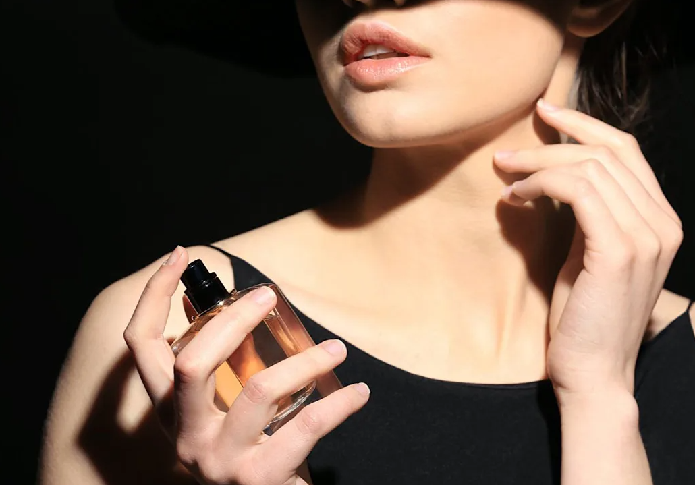

Perfume was then used for secular purposes, to be in harmony with oneself, to procure pleasure, to give
confidence or to seduce. It speaks about oneself, it is the result of a unique alchemy between one's
skin and one's perfume. I like to say that it is not the fragrance that perfumes the personne, but the
personne perfumes the fragrance.

Perfume was then used for secular purposes, to be in harmony with oneself, to procure pleasure, to give
confidence or to seduce. It speaks about oneself, it is the result of a unique alchemy between one's
skin and one's perfume. I like to say that it is not the fragrance that perfumes the personne, but the
personne perfumes the fragrance.

Perfume was then used for secular purposes, to be in harmony with oneself, to procure pleasure, to give
confidence or to seduce. It speaks about oneself, it is the result of a unique alchemy between one's
skin and one's perfume. I like to say that it is not the fragrance that perfumes the personne, but the
personne perfumes the fragrance.
About us
Perfume was then used for secular purposes, to be in harmony with oneself, to procure pleasure, to give
confidence or to seduce. It speaks about oneself, it is the result of a unique alchemy between one's skin
and one's perfume. I like to say that it is not the fragrance that perfumes the personne, but the personne
perfumes the fragrance.Perfume was then used for secular purposes, to be in harmony with oneself, to procure
pleasure, to give confidence or to seduce. It speaks about oneself, it is the result of a unique alchemy
between one's skin and one's perfume. I like to say that it is not the fragrance that perfumes the personne,
but the personne perfumes the fragrance.Perfume was then used for secular purposes, to be in harmony with
oneself, to procure pleasure, to give confidence or to seduce. It speaks about oneself, it is the result of
a unique alchemy between one's skin and one's perfume. I like to say that it is not the fragrance that
perfumes the personne, but the personne perfumes the fragrance.Perfume was then used for secular purposes,
to be in harmony with oneself, to procure pleasure, to give confidence or to seduce. It speaks about
oneself, it is the result of a unique alchemy between one's skin and one's perfume. I like to say that it is
not the fragrance that perfumes the personne, but the personne perfumes the fragrance.